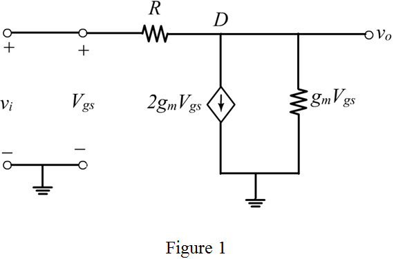

(b)
The output voltage is,
Substitute for .
The voltage gain is,
Determine the transconductance,  .
.
Determine the voltage gain, .
Thus, the voltage gain of the amplifier is .
Refer to Figure P7.18 in the text book for the circuit.
When G and D are open, the gates do not draw any current and hence no current flows through the resistance.
The drain currents of the two MOSFETs are equal.
Determine the drain current the drain current, .
Thus, the drain currents are,
(b)
The output voltage is,
Substitute for .
The voltage gain is,
Determine the transconductance, .
Determine the voltage gain, .
Thus, the voltage gain of the amplifier is .
(c)
Determine the input resistance, .
Thus, the input resistance at G is .
Draw the small signal model of the circuit.

Substitute for  , for
, for  and for
and for  .
.
Thus, the voltage gain from G to D is .
(d)
The gate, G is driven through the large coupling capacitor from a source, having a resistance of .
Write the expression for the ratio, .
Thus, the voltage gain is .
(e)
For both the transistors,  to remain in the saturation region, the condition to be satisfied is,
to remain in the saturation region, the condition to be satisfied is,
Substitute 1.5 V for and 0.5 V for .
For the transistor, to be in the saturation region, the condition to be satisfied is,
In part (a) it is shown that the gate is at zero volts.
Hence, the conditions are,
Thus, the range of the output voltage, is .